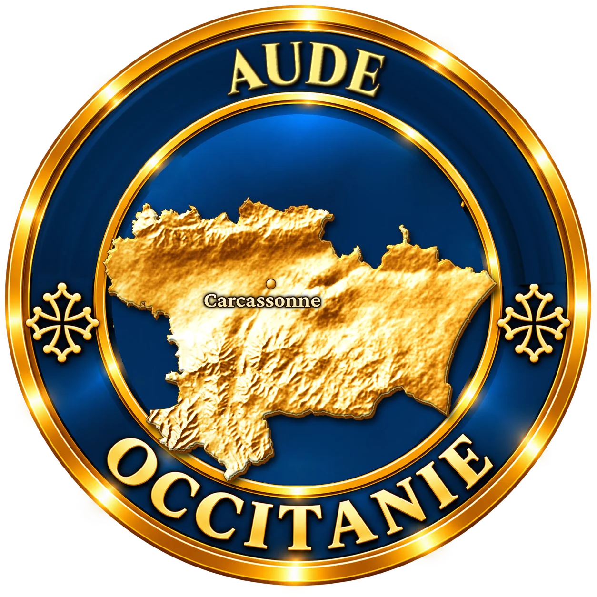
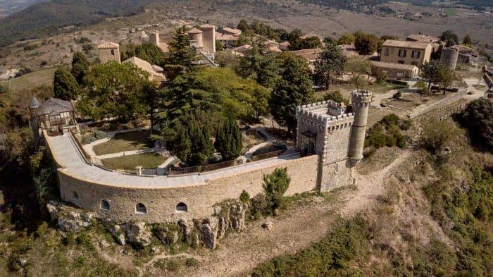
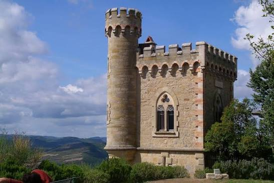

Moins de cent habitants, une église, un château, une tour. Et plus de huit cents livres. Rennes-le-Château doit sa célébrité mondiale à un curé qui dépensait plus qu'il ne gagnait, puis à un hôtelier qui avait besoin de clients. Derrière la légende du trésor, il y a l'histoire, bien réelle, d'un village perché.
Le bourg occupe le sommet d'une colline, à environ 500 mètres d'altitude, au-dessus de la haute vallée de l'Aude et de Couiza. Le site, qui offre une vue à 360 degrés jusqu'aux sommets des Pyrénées, a été occupé dès le Néolithique. On y place l'ancienne Rhedae, chef-lieu du pays de Razès, que cite l'évêque Théodulf, envoyé de Charlemagne, en 798. Ce n'était qu'un bourg modeste, mais placé à un carrefour stratégique.
Au Moyen Âge, la place forte change souvent de maîtres : comtes de Carcassonne, de Barcelone, Trencavel, puis la famille de Voisins après la croisade contre les Albigeois. En 1361, des routiers venus de Castille prennent et ruinent la ville. Elle ne s'en relèvera pas : il ne reste qu'un village. En 1422, la seigneurie passe aux Hautpoul, dont le château, remanié aux XVIe et XVIIe siècles, domine toujours le bourg. En 1578, une grande partie de l'église s'effondre sous les coups des protestants, maîtres provisoires du village.

Au milieu du XIXe siècle, Rennes compte 474 habitants (1851). Quarante ans plus tard, ils ne sont plus que 241 (1891) : l'exode rural frappe durement les Hautes Corbières. En 1883, le conseil général de l'Aude note que le clocher de l'église est « lézardé sur ses quatre faces » et que toitures de l'église et du presbytère sont à refaire.
C'est dans cette paroisse pauvre qu'arrive, en juin 1885, un prêtre de 33 ans né à Montazels, dans la vallée voisine : Bérenger Saunière. Ses premiers sermons contre la République lui valent quelques mois de suspension par le ministre des Cultes. À son retour, il se lance dans la restauration de son église. Entre 1887 et 1897, d'après ses propres comptes, il y dépense 11 605 francs. Il choisit sur catalogue, chez le fabricant toulousain Giscard, un décor d'un goût très sulpicien : statues, chemin de croix et, à l'entrée, un diable qui porte le bénitier. Au-dessus de la porte, il fait inscrire Terribilis est locus iste, « ce lieu est redoutable ». En 1897, l'évêque, Mgr Billard, bénit l'église rénovée.
Puis le curé voit plus grand. Entre 1898 et 1905, sur des terrains achetés au nom de sa servante, Marie Dénarnaud, il fait bâtir la villa Béthania, un jardin, une orangerie, un belvédère et la tour Magdala, une petite tour néogothique où il installe sa bibliothèque. Coût : 26 417 francs. Les villageois s'interrogent, d'autant qu'en 1895 ils s'étaient déjà plaints auprès du préfet des fouilles nocturnes de leur curé dans le cimetière.
D'où venait l'argent ? Le seul fait établi, c'est que l'abbé Saunière vendait des messes, beaucoup de messes, à des fidèles de toute la France.
Le nouvel évêque de Carcassonne, Mgr de Beauséjour, demande des comptes. En 1910, le curé est traduit devant un tribunal ecclésiastique pour trafic de messes. Il refuse de produire ses livres de comptes et, en 1911, il est suspendu de ses fonctions de prêtre. Endetté, il emprunte au Crédit foncier en 1913, sans jamais rembourser. Il meurt à Rennes le 22 janvier 1917.
Marie Dénarnaud, propriétaire en titre du domaine, y vit encore plus de trente ans, puis le cède en viager à un homme d'affaires, Noël Corbu. Elle meurt en 1953. C'est alors que commence la seconde histoire de Rennes-le-Château : celle du trésor.

De son vivant, l'abbé Saunière n'est qu'un curé de campagne au train de vie suspect. Le trésor apparaît quarante ans après sa mort, et l'on peut suivre pas à pas sa fabrication.
Noël Corbu a transformé la villa Béthania en « Hôtel de la Tour ». Pour attirer les clients, il raconte que le curé aurait découvert sous son église un trésor caché par Blanche de Castille. Les 12, 13 et 14 janvier 1956, La Dépêche du Midi publie trois pages sur « le curé aux milliards ». La télévision suit en 1961, l'essayiste Robert Charroux en 1962. Les chercheurs de trésor affluent, pioche à la main, au point que la mairie interdit les fouilles en 1965 pour éviter que le sous-sol ne devienne un gruyère.
Arrivent alors Pierre Plantard et son ami Philippe de Chérisey. Ils fabriquent de faux parchemins et déposent à la Bibliothèque nationale de prétendus « dossiers secrets » sur un « Prieuré de Sion ». Le romancier Gérard de Sède en tire en 1967 L'Or de Rennes, un succès national. En 1982, trois auteurs britanniques ajoutent Marie-Madeleine, le Graal et une descendance de Jésus. En 2003, Dan Brown s'en inspire pour Da Vinci Code.
Le vrai trésor est peut-être ailleurs : la légende a fait vivre le village. Depuis 2000, la commune est propriétaire du domaine, devenu musée. On y voit le presbytère, la villa, la tour, le jardin et la « dalle des chevaliers » découverte par l'abbé dans son église.
À l'entrée de l'église, le démon Asmodée ploie sous le bénitier, écrasé par quatre anges. Commandé sur catalogue chez Giscard, il a été vandalisé plusieurs fois : sa tête d'origine a disparu dans les années 1990.
Certains matins de la seconde quinzaine de janvier, le soleil bas projette à travers un vitrail des taches bleues sur les piliers. Un simple jeu de lumière, que des visiteurs viennent pourtant guetter chaque année.
En 1956, un médecin découvre sous l'église un crâne entaillé. Rendu au village en 2014 après des années de procédure, il a été daté : il appartient à un homme mort entre 1281 et 1396, sans lien avec un quelconque trésor.
En 1948, avant toute légende, un journaliste belge recueille les souvenirs des villageois. Une vieille femme lui montre le diable du bénitier : selon elle, c'est l'ancien curé, transformé en démon.